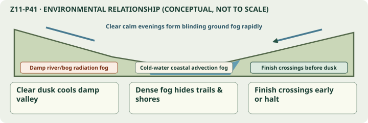

Z11-P41 · Navigation, weather and rescue · New manuscript
Recognize radiation fog, valley mist and rapid dusk visibility collapse
Anticipate ground fog and twilight contrast loss before navigation landmarks disappear.
When it applies · Clear calm evenings near rivers, lakes, bogs, coastal inlets and mountain valleys.
Equipment · Headlamp, compass, paper map and early-camp turnaround plan.

Actions
- Recognize that clear calm skies over damp valleys, wetlands or lakes cool ground air quickly after sunset, forming dense radiation fog that can blanket trails and roads within minutes.[N07, N06]
- Recognize that advection fog rolls rapidly inland off cold ocean or Great Lakes water when warm humid air passes over cold surfaces, cutting coastal visibility to zero suddenly.[N07, N06]
- Finish complex crossings, water travel and exposed ridge descents before evening cooling sets in, keeping headlamps ready and group members tightly spaced if fog forms.[N07, E11, E02]
Failure recognition · Launching an evening paddle or late valley crossing under clear dusk skies just before dense fog hides the shoreline completely.[N07, X06]
Verify · Note evening dew point, cooling air and rising valley mist early enough to secure camp or reach the exit in clear visibility.[N07, ED]
Stop or change course · When dense fog erases landmarks or opposing shore visibility, halt travel safely on firm ground or near known shelter rather than guessing direction.[N07, T06]
Evidence and editorial notes
- E02 · NPS · Ten Essentials (current web edition)
- Section: Navigation; insulation; emergency shelter; emergency food and water · Conditions: Outdoor trips; adjust kit to season and route
Support: Carry essential systems including navigation, insulation, light, water and emergency shelter.
Limitations: Carrying items without practice or cold-weather verification does not ensure readiness. · Conflicting evidence: None; baseline kit system architecture.
Editorial note: Supports failure-mode packing and kit verification cards. · Specialist reviewer: Field education and search and rescue
Primary source · checked 2026-11-24 - E11 · NPS · Hike Smart (current web edition)
- Section: Plan your hike; Stay together · Conditions: Groups on hiking routes
Support: Choose a route suited to the group's abilities and hike at a pace that keeps the group together.
Limitations: Fast hikers moving ahead at junctions is a leading driver of preventable separation. · Conflicting evidence: None; aligns with SAR prevention principles.
Editorial note: Core reference for group accountability and pacing cards. · Specialist reviewer: Group leaders and search and rescue
Primary source · checked 2026-11-24 - N06 · NOAA NWS · JetStream Online School for Weather (current web edition)
- Section: JetStream > Clouds, Fronts and Atmospheric Pressure · Conditions: Field weather observation and short-term storm anticipation
Support: Thickening high-to-low cloud decks, rapid barometric drops, towering cumulus building into anvils and backing/shifting winds often signal approaching frontal systems or convective storms.
Limitations: Local visual weather signs supplement—and never replace—official NWS forecasts and active warnings. · Conflicting evidence: None; separates physical weather cues from folklore sayings.
Editorial note: Grounds cloud, front, wind-shift and microclimate weather cards in Z11. · Specialist reviewer: Meteorology and outdoor leadership
Primary source · checked 2026-11-24
Current assessment · A04-N06 (2026-11-25) · Open: support partial or missing (A04): Supports common frontal pictures. Combined cloud sequence, pressure drop and wind shift claim cannot predict timing or guarantee a thunderstorm at a site. Limits: Specialist review PENDING (Meteorology and outdoor leadership); publication HOLD. All release decisions pending. - N07 · NWS · Fog Safety (current web edition)
- Section: Fog Safety > Visibility Loss and Travel Hazards · Conditions: Dense fog, valley mist, sea fog and blowing-snow whiteout
Support: Fog and whiteout collapse visual landmarks and depth perception rapidly, causing disorientation and unintentional terrain/traffic hazards; halt exposed travel early and rely on verified checkpoints or stay put.
Limitations: Compass bearings alone cannot reveal hidden cliffs, thin ice or drop-offs in zero visibility. · Conflicting evidence: Aligns with B014-P11 whiteout guidance.
Editorial note: Supports whiteout/fog stop thresholds and short-leg navigation boundaries. · Specialist reviewer: Meteorology and search and rescue
Primary source · checked 2026-11-24 - T06 · NPS · Outdoor Emergency Plan (current web edition)
- Section: If you get lost or hurt; call for help · Conditions: Outdoor US emergency
Support: Communicate location, last known point, situation and needs. Stay put when unable to establish a safe route unless immediate danger requires movement.
Limitations: Cell signal is unreliable in backcountry terrain; pre-trip plans bridge communication gaps. · Conflicting evidence: None; core lost-person decision rule.
Editorial note: Foundation for stay/signal/move and dispatch handoff cards. · Specialist reviewer: Search and rescue
Primary source · checked 2026-11-24 - X06 · NOAA NWS · Marine Weather Services (current web edition)
- Section: Marine Weather Services > Small Craft Advisories, Gale Warnings and Sea State · Conditions: Coastal, Great Lakes and open-water marine zones
Support: Marine forecasts issue Small Craft Advisories, Gale, Storm and Hazardous Seas Warnings; wind opposing tide or shallow shoals steepens breaking waves dramatically faster than inland forecasts indicate.
Limitations: Local fetch and headland funneling can exceed regional zone forecasts. · Conflicting evidence: None; integrates with NOAA-NWR marine channels.
Editorial note: Guides marine weather thresholds and coastal-craft abort cards in Z12. · Specialist reviewer: Marine meteorology and maritime safety
Primary source · checked 2026-11-24
Source lineage · NWS fog safety and NOAA JetStream; new manuscript · Classification · New manuscript.